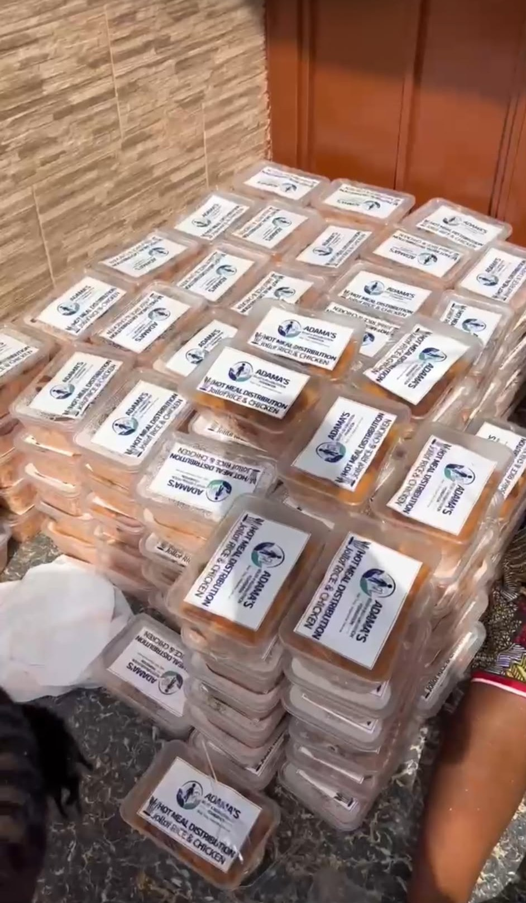
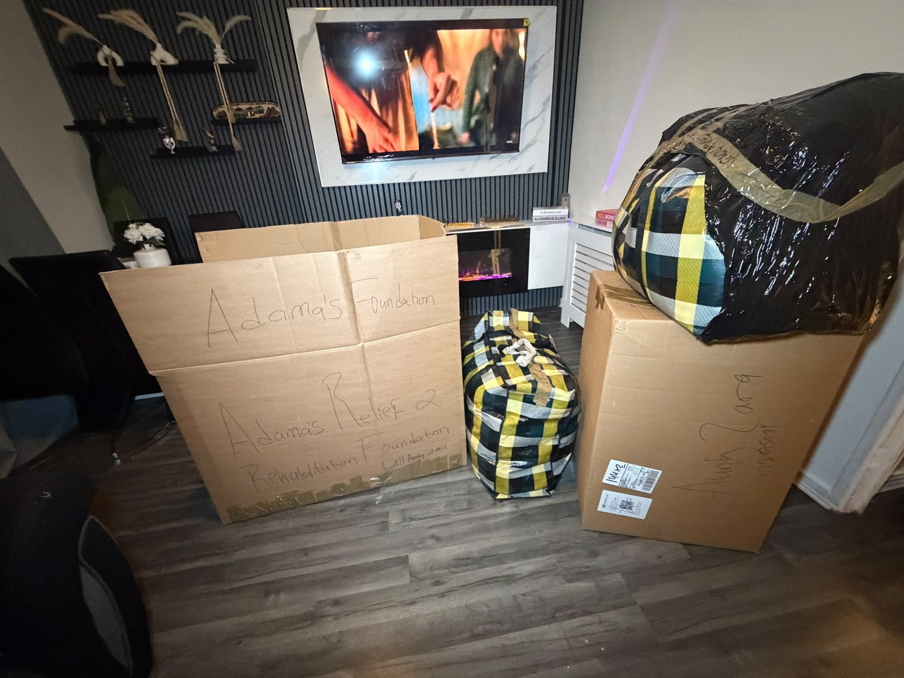

Food Relief · Video
A community food-support handover in progress.
Our work in pictures
Real photographs and videos from our food relief, clothing support and accessibility work.
By the numbers
From the field
Explore the latest photos and videos shared by our team and community partners.
Choose “View photo” or “View video” to open any item individually. Videos remain paused until you choose to start them.

Food support reaching older adults and families in Port Loko.
A community food-support handover in progress.

Community members receive prepared support bags.
Community members and volunteers come together during the food distribution.
Fresh meals packed and ready for community distribution.

Freshly packed meals labelled and ready for distribution in Freetown.
Prepared meals grouped and ready to be handed out.
Hot meals reaching disabled people and others facing hardship in Freetown.

Donated clothing packed and prepared for the next stage of its journey.
Clothes and shoes being sorted before distribution.

The wudu area before the floor-safety improvement.

Anti-slip matting fitted around the washing stations.

The hallway before a clear, safer walking route was created.

A continuous runner now defines the cleared walking route.

The toilet cubicle before additional support was provided.

A height-adjustable support frame fitted around the toilet.

The first supportive chair provided for an older worshipper.
Equipment arriving for the mosque safety and accessibility project.
Be part of the next chapter
Donate, volunteer, or partner with us to reach more families and create more stories worth telling.